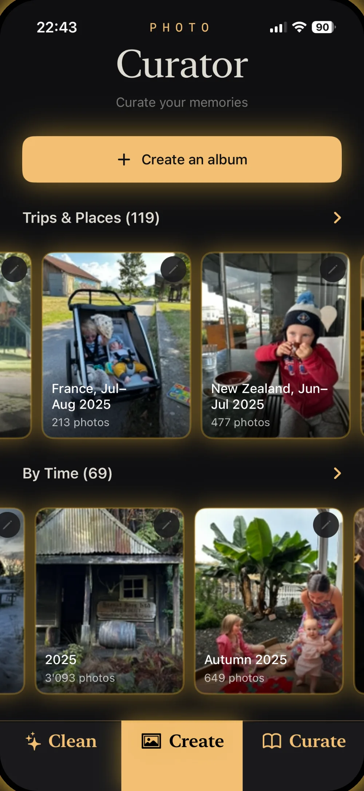
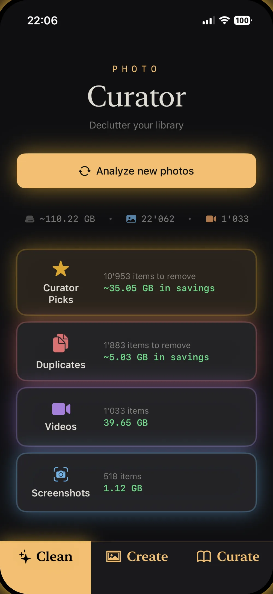
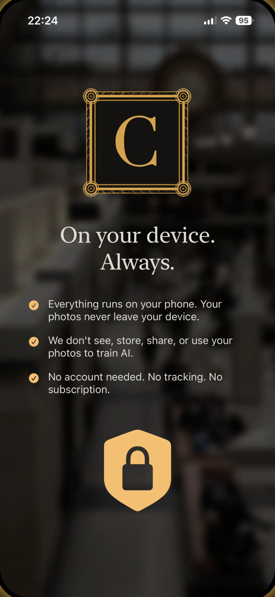

01 — CLEAN
Clean
Surface duplicates, near-identical bursts, stray screenshots and oversized videos. On-device AI does the sorting; you toggle what to remove and reclaim gigabytes in a tap.
Clean · Create · Curate
Get on top of your photo library.
Finally make those albums you've always wanted.
AI photo curation that runs entirely on your iPhone. Your photos never leave your device.
How it works
Curator splits the work into three calm, deliberate steps — clean out the clutter, build the albums, then keep the ones worth printing.
01 — CLEAN
Surface duplicates, near-identical bursts, stray screenshots and oversized videos. On-device AI does the sorting; you toggle what to remove and reclaim gigabytes in a tap.
02 — CREATE
Albums build themselves — auto-grouped by trip, place and moment. Months of camera roll arrive pre-sorted into "France, Jul–Aug" and "Autumn 2025," ready to name and keep.
03 — CURATE
Review your best frames side by side, pick the keepers, and turn the standouts into albums worth opening — or printing. The memories that matter, easy to find again.
Why Curator
No cloud, no account, no monthly bill. Just a focused app that respects your photos and your privacy.
A CLIP neural network and perceptual hashing run entirely on your iPhone. No servers, no uploads — there's nothing to leak.
Pay once, own it forever. No subscription, no recurring charge — and a free tier so you can try it on your last 30 days of photos.
Curator reads your library through Apple's PhotoKit. If iCloud Photo Library is on, it fits right in — no separate import or export.
No analytics, no tracking, no account. We never see, store, share, or train on your photos. Full stop.
A closer look
From a first scan to finished albums — every screen stays calm, editorial and out of your way.


